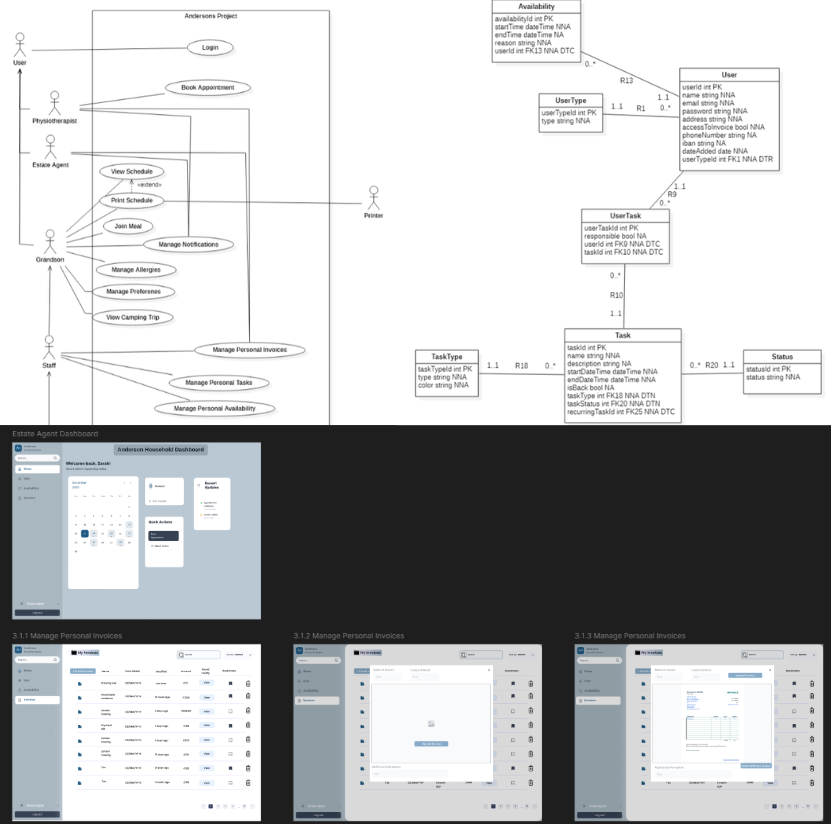

Household Management System (Andersons' Family)
Context & Background
For the first semester of the Skill Integration Lab (SKIL2), we were tasked with acting as IT consultants for an internal client (represented by our professors). The client, the Anderson family, required a digital solution to overcome challenges related to coordination, staff scheduling, and expense tracking. The goal of this ECTS subject was to master the requirements analysis and software design phase before writing any code.
Realisations & Role
We developed a comprehensive final analysis document and a functional prototype design. My role involved translating real-life client problems into structured Use Case Diagrams, defining functional and non-functional requirements, and creating data models. We also utilized Figma to design the user interface, prioritizing features using the MoSCoW method to ensure the final system would effectively support daily household operations.
Skills Gained
- ▹ Hard Skills: UML/Use Case Diagrams, Data Modeling, Figma Prototyping, Requirements Engineering.
- ▹ Soft Skills: Client communication, Agile/Scrum methodology, ethical analysis of IT systems.
